Le guide
L’installation, puis tout ce que fait Stockaarud, écran par écran : pour l’équipe qui note les sorties, pour le responsable stock qui commande et suit les statistiques.
L’installation
Quinze minutes sur un ordinateur, un compte Supabase gratuit, rien à télécharger, aucun mot de passe à retenir. À faire une seule fois, par le responsable stock.
D’abord essayer, sans compte
Ouvrez l’appli et choisissez Essayer tout de suite, sans compte. L’installation guidée démarre aussitôt, avec votre vrai matériel.
Les limites : le stock est gardé sur un seul appareil, l’équipe ne peut pas encore noter depuis ses téléphones, et tout est perdu si l’appareil casse ou si l’historique du navigateur est effacé.
Quand l’essai est concluant, Passer en ligne vous fait suivre les étapes ci-dessous : tout ce que vous avez saisi est repris.
-
Créer le projet Supabase
- Créez un compte sur supabase.com.
- New project : nom
stockaarud, région Europe (Paris).
Vidéo de cette étape à venir
-
Installer les tables
Ouvrez l’appli sur l’ordinateur : l’écran Installer Stockaarud pour mon CAARUD a un bouton pour chaque étape.
- Copier le script, puis Ouvrir l’éditeur SQL.
- Collez, cliquez sur Run.
- Notez le code d’installation affiché en bas : il vous fait entrer dans l’appli.

-
Autoriser les connexions par code
Ouvrir le réglage, activez Allow anonymous sign-ins, puis Save.
Ce réglage permet à l’équipe d’entrer avec un QR code, sans compte. C’est le seul à faire à la main.
-
Brancher l’appli sur votre base
Ouvrir la page des clés, copiez la clé anon public (onglet « Legacy API keys »).
Collez-la dans l’appli avec le code d’installation, puis Installer.
Jamais la clé
service_role: elle donne tous les droits.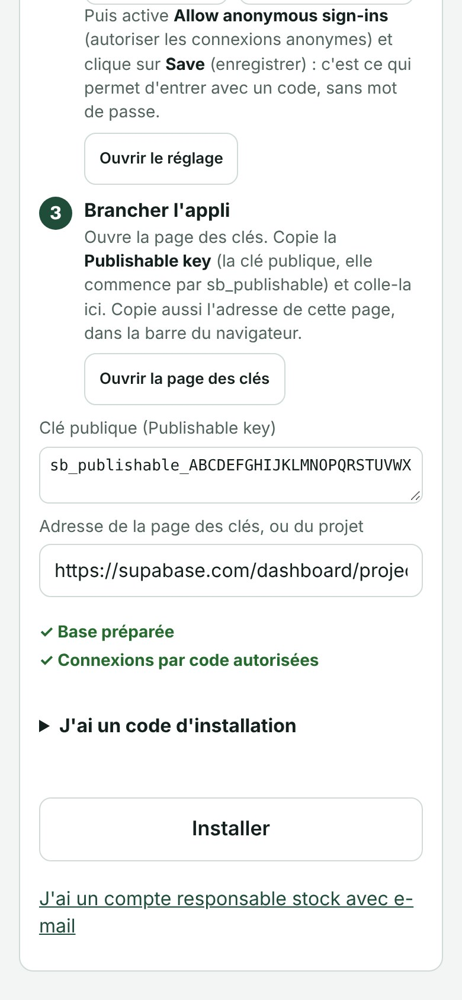
-
Suivre l’installation guidée
Cinq écrans : votre structure, vos activités, votre matériel, l’inventaire de départ (possible plus tard), puis l’invitation de l’équipe.
Vidéo, 32 s : les cinq écrans de l’installation guidée 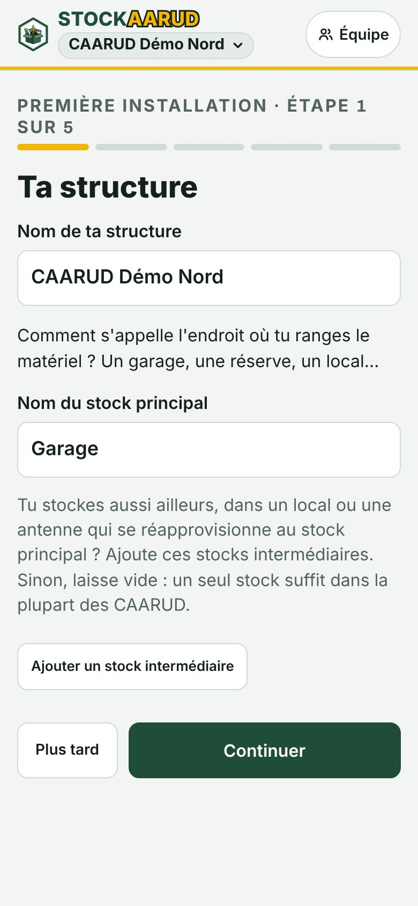
Votre structure 
Vos activités 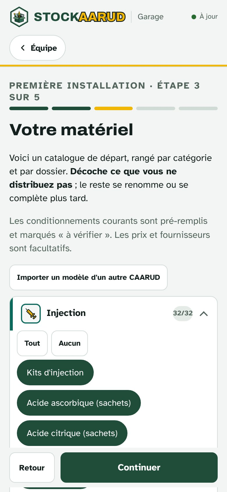
Votre matériel -
Inviter l’équipe
L’appli donne un QR code, un lien, un e-mail tout prêt et la fiche équipe en PDF.
L’adresse de votre base voyage dans le lien : les téléphones de l’équipe se branchent sans rien taper.
Pour le local, imprimez l’affiche QR code : on la scanne en venant chercher du matériel, et l’appli s’ouvre sans rien installer. L’appli en propose aussi une version au nom de votre CAARUD, dans Réglages, Inviter l’équipe.
Vidéo, 12 s : créer le lien et le QR code de l’équipe 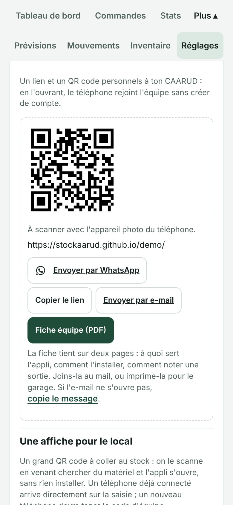
Bon à savoir
Hors connexion
Les saisies restent sur le téléphone et partent dès le retour du réseau.
Pause du projet
Supabase met en pause un projet gratuit resté 7 jours sans activité. Cliquez sur Restore project : rien n’est perdu.
Sauvegardes
Supabase gratuit ne garde pas de copie. Téléchargez la sauvegarde après chaque inventaire : l’appli vous le rappelle.
Accès perdu
Dans Supabase, SQL Editor, tapez
select public.code_secours();puis Run : vous obtenez un nouveau code de responsable stock.Mises à jour
Elles arrivent seules : les téléphones prennent la nouvelle version à la prochaine ouverture.
Règles de la base
Le script d’installation peut être relancé sans risque, il ne supprime rien. Relancez-le de temps en temps dans SQL Editor : il apporte les protections ajoutées depuis, par exemple « l’équipe ne modifie que ses propres saisies ».
L’équipe
Ce que fait chaque personne qui distribue du matériel, depuis son téléphone.
-
Noter une sortie
Trois clics, debout au stock ou en maraude.
- Où ? L’activité : accueil, maraude, festif… Elle reste choisie toute la journée.
- Quoi ? Le produit. Les plus utilisés pour cette activité sont en haut, et la recherche comprend « capotes » ou « paille ».
- Combien ? Tapez le nombre, ou touchez +5, +10, +20, +50 autant de fois qu’il faut. En unités, boîtes ou cartons : l’appli convertit. Puis Valider.
Une estimation honnête suffit : pas besoin de compter au carton près.
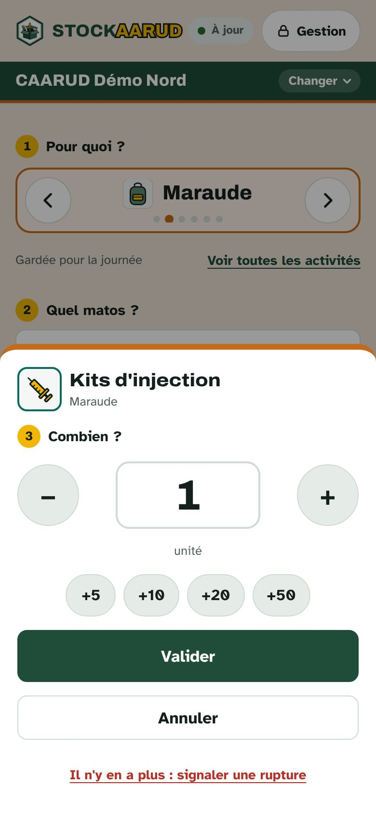
-
Changer d’activité
Les flèches, ou un glissement du doigt, passent d’une activité à l’autre. L’écran prend la couleur de l’activité : on voit d’un coup d’œil pour quoi on note.
Voir toutes les activités ouvre la liste complète, avec le prêt ou don à une asso et la perte ou casse.
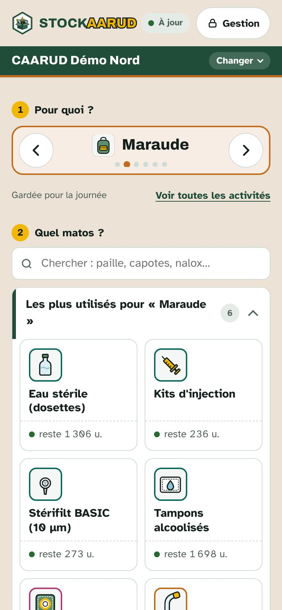
-
Les autres cas
- Casse, perte, périmé
- Choisissez Perte / casse comme activité.
- Prêt ou don à une asso
- Choisissez Prêt / don à une asso. Quand l’asso rend le matériel, touchez Rendu.
- Du matériel revient
- Dans Mes saisies d’aujourd’hui, touchez J’en ramène : la sortie d’origine est réduite, les statistiques restent justes.
- Une erreur
- Dans Mes saisies d’aujourd’hui, touchez Annuler.
- Une livraison arrive
- Une livraison est arrivée ? en bas de l’écran : touchez le produit et indiquez ce qui est arrivé.
- Il n’y en a plus
- Dans l’écran Combien, Il n’y en a plus prévient le responsable stock.
- Une référence manque dans la liste
- Le produit n’existe pas encore dans l’appli : tapez son nom dans la recherche, puis touchez Signaler au responsable stock. Il pourra l’ajouter au catalogue.
- Pas de réseau
- Notez quand même : tout part dès que le réseau revient.
-
Travailler dans plusieurs CAARUD
Scannez une fois le QR code de chaque CAARUD. Le nom du CAARUD où vous êtes s’affiche dans la bande verte en haut ; Changer passe de l’un à l’autre sans retaper de code.
Les sorties notées hors connexion restent rattachées à leur CAARUD.
Pour ajouter un CAARUD : Changer, puis Ajouter un autre CAARUD.
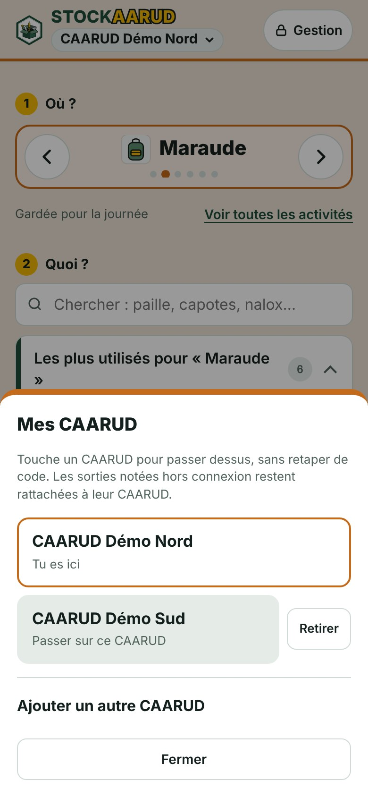
Le responsable stock
Le bouton Gestion, en haut de l’appli, ouvre l’espace du responsable stock. Il marche sur téléphone et, plus confortablement, sur ordinateur.
Sur ordinateur
Ouvrez la même adresse sur l’ordinateur du bureau.Ouvrez la même adresse sur l’ordinateur du bureau : stockaarud.github.io/stockaarud. Connectez-vous avec votre e-mail, ou avec un code de responsable stock : sur le téléphone, Réglages, Accès et appareils, Ajouter un responsable stock.
Le téléphone et l’ordinateur voient le même stock, en direct. Tout ce que décrit ce guide marche sur les deux ; l’ordinateur ajoute :
- Tous les onglets
- Visibles d’un coup, avec des graphiques en grand. Les touches 1 à 7 passent d’un onglet à l’autre.
- Saisie en lot
- Dans Mouvements : les sorties notées sur papier, d’un coup, à la date voulue. Entrée passe au produit suivant.
- Matériel en tableau
- Dans Réglages : prix, cartons et fournisseurs se modifient comme dans un tableur.
- Écran du stock
- Depuis le tableau de bord : un affichage en grand pour un écran ou une tablette au local, mis à jour tout seul.
Tableau de bord
C’est la page à regarder en arrivant.C’est la page à regarder en arrivant. Elle répond à une question : qu’est-ce qui va manquer ?
- Les alertes
- Les produits qui seront épuisés avant la prochaine livraison, les ruptures signalées par l’équipe, les références demandées, les gros écarts d’inventaire.
- L’autonomie
- Pour chaque produit, le nombre de jours qu’il reste au rythme actuel, du plus urgent au moins urgent. Touchez un produit pour voir son stock, sa consommation par semaine, son point de commande, ou pour corriger son stock.
- Le budget
- Ce qui a été dépensé depuis janvier, comparé au budget de l’année.
- Par activité
- Les 30 derniers jours : nombre de sorties et coût du matériel de chaque activité.
- Péremptions à venir
- Les lots qui périment dans l’année. « À risque » : ce qui sera encore en stock à la date de péremption, au rythme actuel. Un lot à risque peut être proposé à un partenaire à temps.
- Ce qui a changé
- Les hausses et les baisses nettes du trimestre, à discuter en équipe.
- Exports
- Tous les mouvements, les totaux de l’année, ou un modèle de réglages pour un autre CAARUD.

Commandes
L’appli propose une commande par fournisseur, arrondie au carton.L’appli propose une commande par fournisseur, arrondie au carton.
- D’où vient le chiffre
- De la consommation des dernières semaines, du délai de livraison du fournisseur, d’un stock de sécurité et des saisons que vous avez réglées. Comment ce chiffre est calculé détaille le calcul produit par produit.
- Deux rythmes
- « Au besoin » : l’appli propose de commander dès que le stock passe sous le point de commande. À date fixe : elle prépare la quantité pour tenir jusqu’à la livraison suivante. Le rythme se règle par fournisseur.
- Le bon de commande
- Le texte à envoyer au fournisseur, avec ses références et le montant estimé, à copier ou en tableur.
- Enregistrer
- Ajustez les quantités, puis enregistrez ce que vous avez réellement commandé : l’appli sait alors ce qui est attendu.
- La livraison
- L’équipe ou vous indiquez ce qui est arrivé, avec la date de péremption si besoin. Une livraison partielle laisse le reste « attendu ».
- Le prix
- Le prix unitaire est enregistré sur chaque commande : modifiez-le quand le fournisseur change ses tarifs, les statistiques suivront l’évolution.
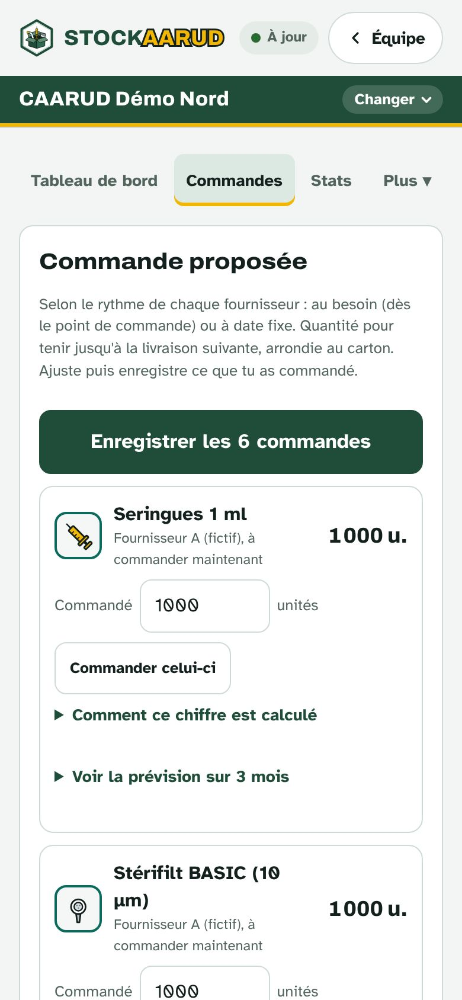
Statistiques : le principe
Dix-sept vues, à choisir dans la bande en haut de l’onglet.Dix-sept vues, à choisir dans la bande en haut de l’onglet. Trois réglages reviennent partout :
- Pour
- Tout le CAARUD, ou une ou plusieurs activités : les chiffres et les couleurs suivent.
- La période
- 1, 3, 6 mois ou 1 an selon la vue.
- Exporter
- Sur chaque vue : un PDF avec le graphique et son tableau, un tableur CSV, ou un envoi par WhatsApp et e-mail.
Chaque graphique a une légende et donne ses chiffres au toucher ou au survol. Les prêts et dons à d’autres associations sont comptés à part : ils ne gonflent pas vos sorties.

Statistiques : ce qui sort
- Consommation
- Les sorties mois par mois, par produit ou par catégorie, en unités ou en euros, avec le classement complet. Touchez une ligne pour l’isoler. Sert à voir ce qui part le plus et repérer une hausse ou un creux.
- Par activité
- Pour chaque activité, la répartition par catégorie et les produits les plus distribués. Sert à décrire le public de chaque lieu : l’accueil et le festif ne distribuent pas la même chose.
- Camemberts par dossier
- Dans un même dossier (les filtres, les seringues…), quels produits sont choisis. Sert à décider quelles références garder ou développer.
- Jours forts
- Le nombre de sorties notées chaque jour sur 12 semaines, et la moyenne par jour de la semaine. Sert à organiser les permanences et le réassort.
- Année / an dernier
- Les unités sorties chaque mois, cette année et l’an dernier, pour tout le matériel, une catégorie, un dossier ou un produit. Sert à distinguer une vraie tendance d’un effet de saison.
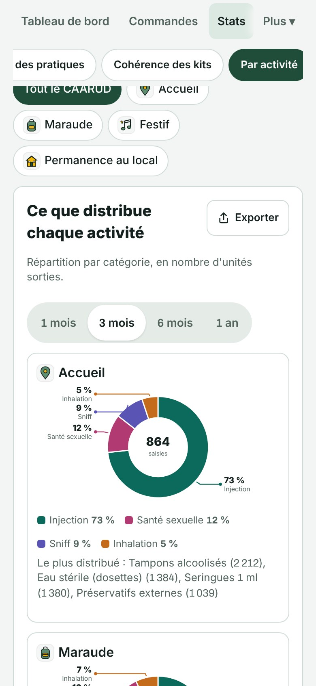
Statistiques : comprendre les pratiques
- Évolution des pratiques
- Chaque catégorie comparée à sa propre moyenne : 100 = un mois moyen, 150 = 50 % de plus. Sert à comparer l’injection et l’inhalation même si leurs volumes n’ont rien à voir, sur 12 ou 24 mois.
- Cohérence des kits
- Pour 100 seringues sorties en vrac, combien de filtres, de Stéricup, d’eau, de tampons sont partis avec. Sous 100, des personnes repartent probablement sans le matériel complet. Sert à ajuster le discours au guichet et la présentation du matériel.
- Ce qui a changé
- Les 3 derniers mois comparés aux 3 précédents, et aux mêmes mois de l’an dernier. Seuls les écarts de 20 % ou plus, sur des volumes qui comptent, sont gardés. Sert à préparer une réunion d’équipe : changement de pratiques, de public, rupture, ou oubli de saisie ?
- Tableau croisé
- Vous choisissez les lignes, les colonnes et la mesure : produits par activité, catégories mois par mois, sorties par jour de la semaine… en unités, en euros ou en nombre de sorties. Sert à répondre à une question précise, puis à sortir le tableau en CSV.
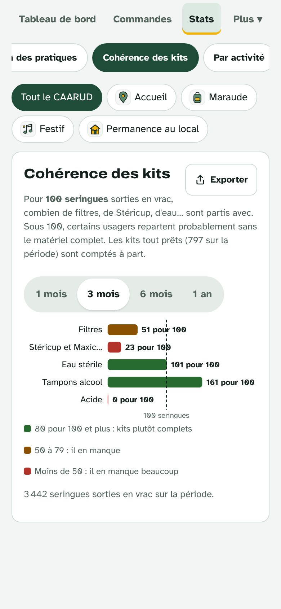
Statistiques : l’argent
Les coûts utilisent le prix unitaire TTC indiqué dans Matériel.- Budget
- Le coût du matériel sorti depuis janvier, la projection sur l’année et la part du budget consommée. La ligne pointillée montre le rythme régulier, un douzième par mois : au-dessus, vous dépensez plus vite que prévu. Tapez le budget de l’année pour l’activer.
- Budget prévisionnel
- L’année prochaine, mois par mois, par catégorie, par fournisseur et par produit, à partir des sorties des 12 derniers mois et des saisons réglées. Vous pouvez appliquer une hausse ou une baisse d’activité, prolonger la tendance, ou ajuster une catégorie. Sert à chiffrer la demande de financement.
- Fournisseurs
- Sur 12 mois : le délai réel entre la commande et la livraison, les livraisons incomplètes ou en plusieurs fois, et l’évolution des prix. Si un fournisseur livre plus lentement que le délai réglé, l’appli propose de le corriger. Sert à éviter les ruptures dues à un délai optimiste.
Les coûts utilisent le prix unitaire TTC indiqué dans Matériel. Un produit sans prix n’est pas compté : l’appli le signale.
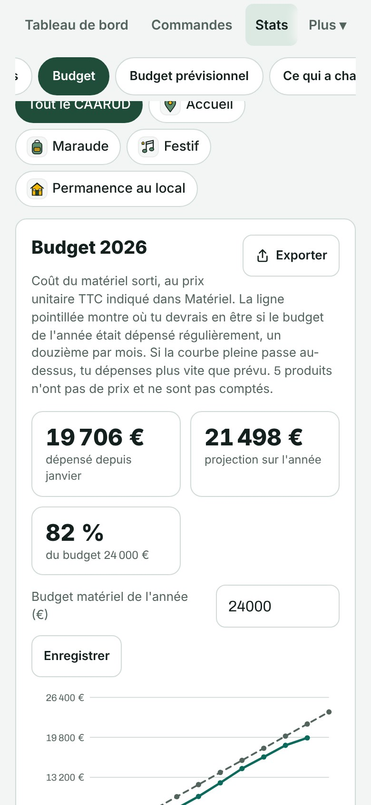
Statistiques : l’état du stock
- Météo du stock
- Combien de jours chaque produit va tenir, saisons comprises. Rouge : commander tout de suite. Orange : à prévoir. Vert : tranquille.
- Ruptures
- Les jours où un produit a manqué. Rouge : rupture constatée par l’équipe avec « Il n’y en a plus ». Orange : rupture probable d’après les calculs, à confirmer. L’appli estime aussi les unités non distribuées, leur valeur et le nombre de passages concernés. Sert à défendre un budget ou de la place de stockage.
- Produits dormants
- Le matériel qui n’est pas sorti depuis 3 mois. Sert à le proposer à un partenaire avant qu’il périme, ou à le retirer du catalogue.
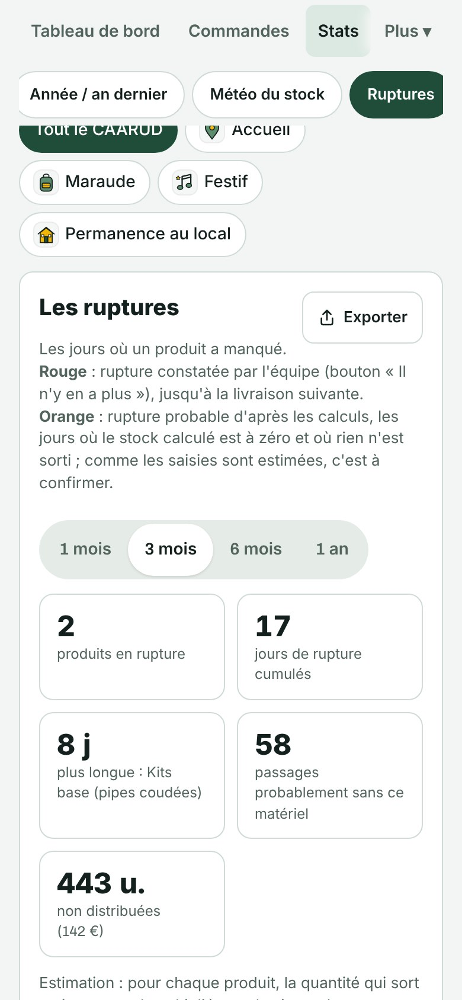
Statistiques : le rapport d’activité
- Chiffres de l’année
- Tout le matériel distribué dans l’année : unités, nombre de saisies, références, coût estimé, le graphique par mois, la part de chaque catégorie et le détail produit par produit et par activité. Exporter le bilan sort le PDF, avec la comparaison à l’an dernier, les pertes, les prêts et dons, et les ruptures.
- Récupération
- Si vous faites noter le matériel récupéré : seringues usagées, collecteurs, kilos de DASRI, et le taux de récupération par rapport aux seringues distribuées.
- Par passage
- Si vous importez le nombre de passages, le bilan ajoute le matériel distribué par passage.
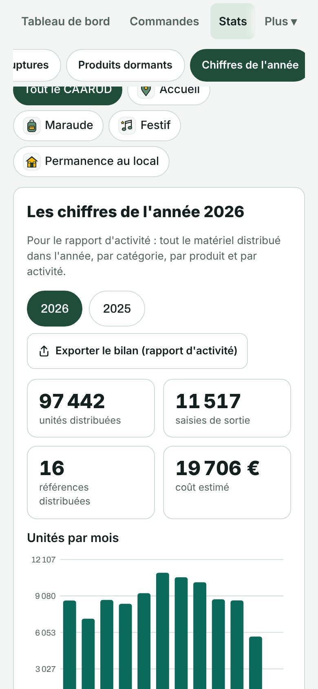
Prévisions
Les 3 prochains mois selon trois hypothèses.Les 3 prochains mois selon trois hypothèses : le rythme actuel, comme l’an dernier, ou une hausse ou baisse que vous fixez. L’appli compte les commandes à prévoir, leur coût et les ruptures possibles.
Et si je commande : changez une quantité ou une date de commande, la courbe du stock suit. Utile avant un festival ou une fermeture.
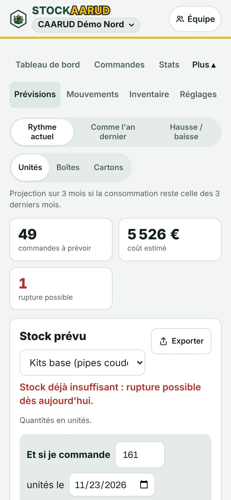
Mouvements
- Entrée hors commande
- Un don, du matériel rendu par une asso, un emprunt, des cartons qui reviennent d’une activité, avec la péremption si besoin.
- Saisie en lot
- Pour rentrer d’un coup des sorties notées sur papier : choisissez le jour et l’activité, tapez les quantités, enregistrez.
- Prêts et emprunts
- La liste de ce qui reste à rendre, dans un sens ou dans l’autre.
- Le journal
- Chaque mouvement, sans prénom. Vous pouvez modifier ou supprimer n’importe quelle ligne ; les corrections restent signalées. L’équipe, elle, ne peut corriger que ses propres saisies.
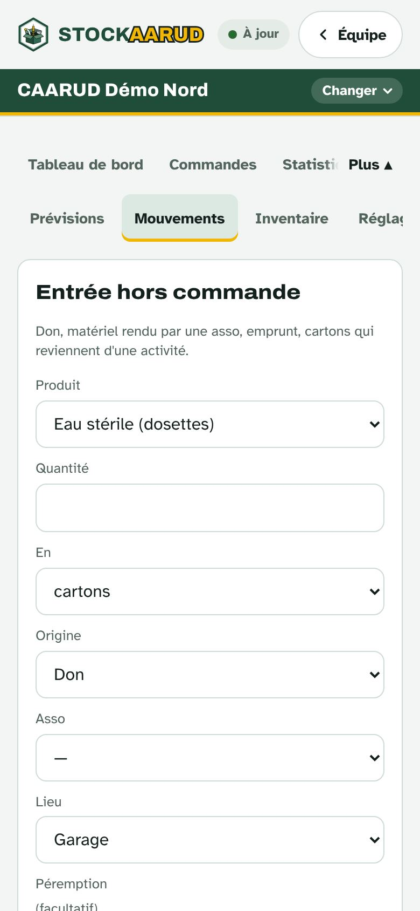
Inventaire
L’inventaire remet le stock de l’appli d’accord avec les étagères.L’inventaire remet le stock de l’appli d’accord avec les étagères. Les sorties sont des estimations : un inventaire par trimestre, ou avant une grosse commande, garde les calculs justes.
- Produit par produit
- L’appli affiche le stock théorique de chaque produit. Tapez ce que vous comptez, Valider et suivant, ou Passer si vous ne l’avez pas compté.
- Tout sur une page
- Tout le matériel d’un coup, pratique sur ordinateur ou avec une feuille de comptage. Les lignes laissées vides ne changent rien. Cartons et unités en vrac s’additionnent.
- Ce qui se passe ensuite
- Le stock compté remplace le stock théorique : les alertes et les commandes repartent de là. Les sorties déjà notées ne sont pas modifiées.
- Lire les écarts
- Les plus gros écarts en euros sont en haut. Un manque vient souvent de sorties non notées ; un surplus, d’une sortie notée deux fois ou d’une livraison enregistrée en trop. Les écarts importants remontent aussi dans les alertes.
- Inventaires passés
- Ils restent consultables, avec leurs écarts.
- Un seul produit
- Pas besoin d’un inventaire complet : depuis le tableau de bord, touchez le produit puis corrigez son stock.
- Après
- Téléchargez une sauvegarde et rangez-la dans le dossier partagé du CAARUD : l’appli vous le rappelle.
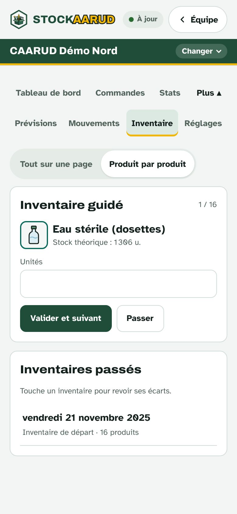
Reprendre un historique
Vous suiviez le stock dans un tableur ?Vous suiviez le stock dans un tableur ? Importez les sorties des années précédentes : vous aurez tout de suite des statistiques, la comparaison avec l’an dernier et un budget prévisionnel fiable. Le stock actuel n’est pas touché.
- Vérifiez que tout votre matériel est dans Réglages, Matériel, avec les bons noms.
- Dans Réglages, Reprendre un historique, touchez Télécharger le modèle (CSV). Il contient déjà une ligne par produit et une colonne par mois, pour les deux dernières années.
- Ouvrez-le dans Excel ou LibreOffice et remplissez les quantités sorties chaque mois. Laissez vide ce que vous ne savez pas.
- Enregistrez au format CSV, puis touchez Importer l’historique. L’appli montre ce qu’elle a lu avant d’enregistrer.
- Prix de l’époque
- La colonne prix unitaire est facultative. Remplie, elle donne le coût réel de cette année-là ; vide, le prix actuel est utilisé.
- Par activité
- Facultatif aussi : pour détailler un produit par activité, recopiez sa ligne et indiquez l’activité.
- Passages
- En tête de chaque année, une ligne « Passages » par activité accueille le nombre de personnes, mois par mois.
- Une autre année
- Recopiez un bloc et changez l’année.
- Se tromper
- Réimportez le fichier corrigé : il remplace les chiffres des mêmes mois. L’historique repris peut aussi être retiré d’un geste.
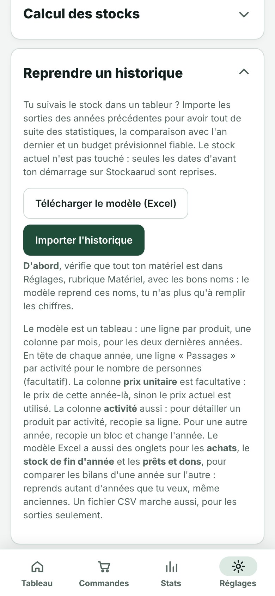
Réglages
- Inviter l’équipe
- Le lien et le QR code de votre CAARUD, à envoyer par WhatsApp ou par e-mail, la fiche équipe et l’affiche QR code pour le local.
- Accès et appareils
- Ajouter un responsable stock. Un téléphone perdu : Retirer l’accès de toute l’équipe, puis donnez un nouveau code.
- Alertes par e-mail
- Facultatif. Un mail quand l’équipe signale une rupture, quand un produit sera épuisé avant la prochaine livraison, et un récap « Météo du stock » chaque semaine, toutes les deux semaines ou chaque mois. Chaque adresse confirme d’abord son inscription. Les mails partent quand un appareil de l’équipe ouvre l’appli avec du réseau.
- Accès à la gestion
- Un code à chiffres pour protéger l’espace gestion sur un appareil partagé.
- Stocks et organisation
- Le nom de la structure, le stock central et les stocks intermédiaires (un local, une antenne), avec un schéma à imprimer.
- Points de distribution
- Les activités proposées à l’étape « Où ? ». Une date de fin en fait un point temporaire, pour un festival. Un point archivé reste dans les statistiques.
- Associations partenaires
- Les assos à qui vous prêtez ou donnez du matériel.
- Fournisseurs
- Le délai de livraison et le rythme des commandes, réglés une fois par fournisseur.
- Saisonnalité
- Une hausse (festivals, été) ou une baisse (fermeture) change la consommation prévue, donc les quantités proposées. « Chaque année » répète la période.
- Calcul des stocks
- Le niveau de prudence : éviter la rupture 95 % ou 99 % du temps, et la marge des produits essentiels.
- Catégories et matériel
- Contenance du carton, prix, fournisseur, synonymes, photo. Une base RdR de départ est prête à activer. La liste s’exporte et s’importe en CSV : l’appli montre les changements avant de les appliquer.
- Passages et matériel récupéré
- Facultatif, sans aucun nom. Importez le nombre de passages par jour depuis un CSV (un modèle est fourni) ou faites-les compter sur le téléphone ; faites noter le matériel récupéré.
- Sauvegarde et remise à zéro
- Télécharger ou restaurer une sauvegarde complète. Effacer l’historique, ou tout effacer.
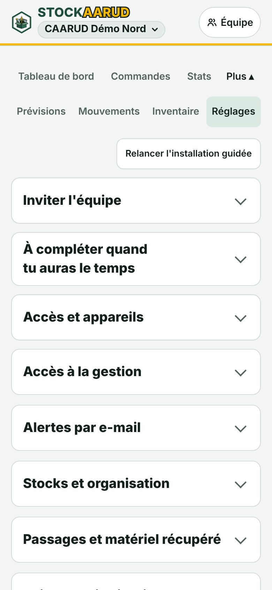
Qui peut faire quoi
| Action | Équipe | Responsable stock |
|---|---|---|
| Noter une sortie, un retour, une perte | oui | oui |
| Voir le stock | oui | oui |
| Tableaux de bord, alertes, commandes, statistiques | non | oui |
| Modifier le matériel et les réglages | non | oui |
| Corriger, sauvegarder, tout effacer | non | oui |
À vous d’essayer.
La démo a un an de données fictives : rien à installer, rien n’est envoyé.